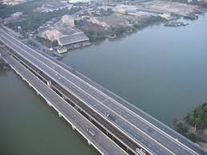

Bang Na Expressway |
|
Bang Na Expressway

The Bang Na Expressway, also known as the Burapha Withi Expressway, is a unique structure in Thailand. Here are some interesting facts:
While technically an elevated highway, the Bang Na Expressway is often considered one of the world's longest bridges. It significantly reduces travel time in the Bangkok metropolitan area and showcases Thailand's commitment to modern infrastructure development. |
|
|
© 2024 World's Biggest Bridges. All rights reserved. |
|